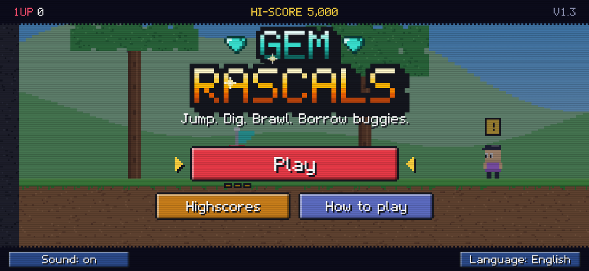
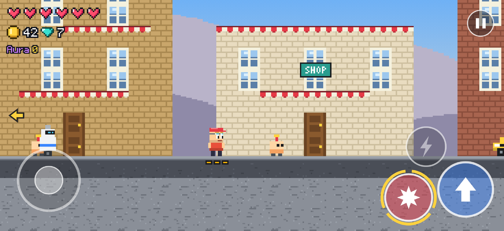
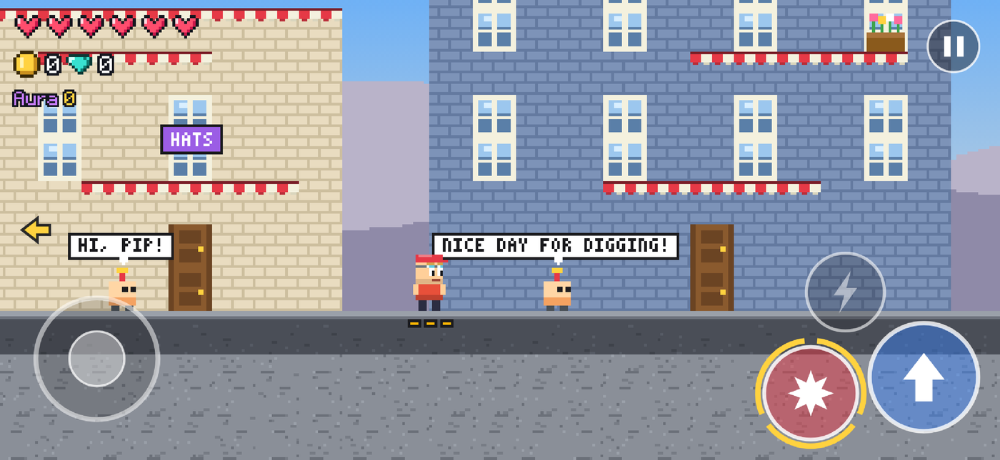
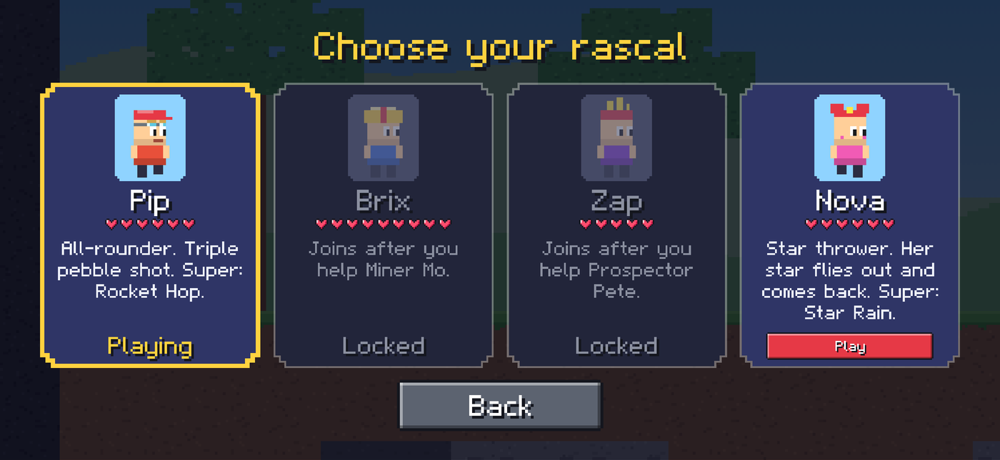
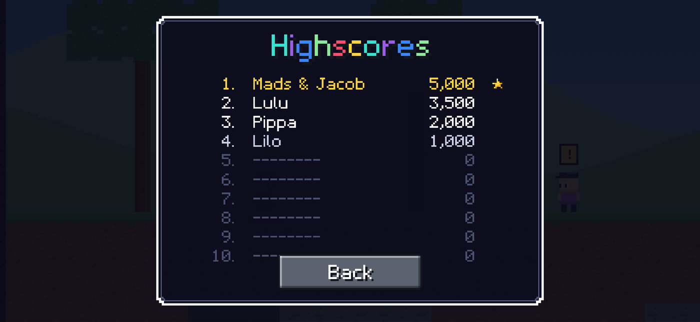

GEM RASCALS
Jump, dig, build, brawl and borrow buggies in a block world.
About the game
Gem Rascals is a colourful block-world platform game. Run and jump through a hand-built valley, mine blocks and build your own path, brawl with cheeky robots, borrow buggies in town and dig deep for buried treasure. More than fifty missions lead from the meadow through the town, across the canyon, into the mine and down to King Clank in the Rumble Pit — and after the crown, everyone in town has their own side-jobs for you.
- Mine and build — break blocks with your pickaxe and place them to cross gaps and reach treasure.
- Three rascals — Pip, Brix and Zap, each with their own attack and super move.
- Brawl and explore — bop Grumbles, dodge the Shush-Bots, light TNT and ride buggies, scooters and portals.
- Treasure hunt — 28 chests, 12 lost trinkets and one big chest are buried across the valley.
- Worlds from a code — play a fresh randomly generated valley and share its code with friends, or play the original story world.
- Seasons — every world has its own season: spring blossoms, summer, autumn leaves or winter snow.
- Highscores — earn Aura, chain combos and climb the leaderboard.
- English and German — switch language any time; German is in a playful youth-slang style.
- Plays offline — no internet connection needed, no ads, no accounts.





How to play
| Move | Slide your left thumb anywhere on the left side of the screen. Up and down climb ladders. |
| Jump | The blue button on the right. Hold it for a higher jump. Land on a Grumble to bop it. |
| Attack | The red button. Tap to aim by itself, or drag and let go to choose the direction. |
| Super | The small button lights up after a few hits. Each rascal has a different super move. |
| Mine | With the pickaxe, hold a finger on a block next to you until it breaks. |
| Build | Tap a block in the bar at the bottom, then tap an empty spot next to something solid. |
| Drive | Stand at a buggy or scooter and press the green button. Jump makes buggies hop and scooters fly. |
| TNT | Place it like a block, then shoot it or press the green button next to it, and run — three seconds later it blows a hole and opens treasure. |
| Keyboard | On a computer: arrow keys or A/D, Space to jump, J to attack, K for super, E to use things, Q to switch tool, mouse for blocks. |
Stuck in a hole you dug? Pause and choose “Back to flag”.
Help
Which devices does it run on?
iPhone and iPad (iOS 16 and later), Amazon Fire tablets, and Android phones. The game plays in landscape.
Does it need the internet?
No. Gem Rascals runs entirely on your device and works offline. There are no accounts and no ads.
How do I switch the language, sound or music?
On the title screen you can switch language and sound; music and more options are on the pause screen. Your choices are remembered.
How do world codes work?
After you type your name, Gem Rascals shows a world code. “New world” rolls a fresh randomly generated valley, “Enter code” lets you type or paste a friend’s code, and “Original valley” plays the story world. Copy or share a code so a friend can play exactly the same valley. The same code always makes the same world.
What is the Premium pack?
An optional one-time purchase. It adds a fourth rascal (Nova), a little helper that pulls in coins (Funki), four special hats and a golden name on the highscore list. The whole story can be won without it, and there is nothing else to buy. A grown-up question appears before any purchase.
Is it suitable for children?
Yes. The game is friendly and collects no personal data. The only purchase sits behind a parental gate, and nothing in the game links out to other apps or the web.
Contact
Questions, bug reports or ideas? Write to nospamapplestore@gmail.com. If you report a problem, please mention your device and its operating system version.